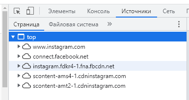

| Ник | Пост | Дата |
|---|---|---|
| Nuke | С 30.11 перестал открываться сайт, приложение продолжает работать. Скрин с впн и без, соответственно С впн бывает ещё и так выдаёт В остальном проблем нет, при включении впн все так же исправно открываются блокнутые сайты, но что не так с инстой? | 2021-12-01T12:24:52.927Z |
| level001 | Ага пару дней уже. | 2021-12-02T07:19:16.625Z |
| ValdikSS | Не знаю, что это было, но исправилось сбросом DNS-кеша. | 2021-12-02T07:42:17.161Z |
| Nuke | Вообще, раз в месяц встречается такой трабл - совершенно разные сайты могут не открываться с антизапретом, и включаешь browsec и работает. Сейчас точно не сформулирую конкретные примеры, но это бывает. Может раз в день принудительно dns кеш сбрасывать? Если в этом нет минусов и проблем. Хуже не будет. | 2021-12-02T08:13:21.206Z |
| zinoid | Разве Instagram разрешает VPN? Может быть не все палит пока. Гайки там закручены по самое немогу. | 2021-12-21T18:47:15.431Z |
| DarkEmpire | все, инста полностью заблочена | 2022-03-13T21:30:21.019Z |
| Nuke | Слава те исусе | 2022-03-13T21:37:32.752Z |
| neo4511(neo4511) | Планируется разблокировка Instagram средствами антизапрета? | 2022-03-13T23:50:54.534Z |
| ar2rjke(ar2rjke) | Полагаю да… сайт пока не внесен в реестр Роскомнадзора, как только он появится там - должен заработать. | 2022-03-14T06:45:27.921Z |
| meek | Поковырялся пять минут – для восстановления работы сайта и приложения достаточно было пустить через Tor/VPN следующие эндпойнты:
Возможно, CDN-хостов бывает и больше, но сходу не обнаружилось. Основной функционал (просмотр, постинг, мессенджер (директ) и всё остальное) вроде бы работает. | 2022-03-14T06:48:56.159Z |
| ar2rjke(ar2rjke) | На уровне роутера как это реализовать? стоит OpenVPN + файл конфигурации от AntiZapret. | 2022-03-14T07:04:59.694Z |
| meek | В таком конфиге – вероятно, никак, пока ValdikSS не поправит свои custom-rules. У меня настроены самопальные костыли на маршрутизаторе для торификации необходимых ресурсов. | 2022-03-14T07:07:53.136Z |
| Nuke | адреса инсты еще не попали в публичные списки ркн, либо я не там ищу | 2022-03-14T07:24:12.564Z |
| ar2rjke(ar2rjke) | Все правильно, сайт пока не внесен, ждем… | 2022-03-14T07:35:58.218Z |
| meek | Ну, сам уже внесён и в ЕАИС виден. | 2022-03-14T07:38:34.142Z |
| ar2rjke(ar2rjke) | Нет, немного не то, больше похоже на конкретные посты + дата от 10.03.2022. Смотрю здесь - Реестр запрещенных сайтов + стоит фильтр с 13.03.2022 по 14.03.2022 - пока его там нет. | 2022-03-14T07:47:09.207Z |
| meek | Ну рублэклист лагает сильно, в любом случае. | 2022-03-14T07:51:02.429Z |
| ar2rjke(ar2rjke) | хм… интересно… тогда непонятно почему антизапрет не реагирует… | 2022-03-14T07:56:59.813Z |
| ValdikSS | Инстаграм отныне проксируется через прокси и маршрутизируется через VPN. Задержка между обновлением листа и его отдачей клиену — около 8 часов, он просто не успел попасть в клиентский лист до того, как я проснулся и начал настраивать вручную. | 2022-03-14T09:35:17.843Z |
| ar2rjke(ar2rjke) | Понял, спасибо! У меня пока не работает, вероятно нужно время… UPD: Перезапустил подключение OpenVPN - все заработало! | 2022-03-14T09:37:29.839Z |
| ar2rjke(ar2rjke) | Заметил несколько особенностей:
Переподключал OpenVPN + чистил кэш, куки и т.д. UPD: Все заработало, как понимаю нужно было время… | 2022-03-14T09:54:02.988Z |
| yatolkosprosit | Можно ли сделать так, чтобы yt-dlp работал через прокси Антизапрета (не через ВПН)? | 2022-03-14T11:10:42.560Z |
| ekze | На личном сервере VPN антизапрета, инстаграм так и не заработал, пробовал вручную запускать /root/antizapret/doall.sh - не помогло. Его нету в автоматических списках и надо добавить вручную в include-hosts-custom.txt? | 2022-03-14T16:45:33.354Z |
| ValdikSS | 2022-03-14T17:00:45.494Z | |
| Netwood | Через VPN в браузере вроде все ок. А через приложение с вчерашнего вечера перестало грузится. Свой сервер сделать не могу. Никак на общем не поправить? Кидал девушкам инструкцию по установке - только разобрались, как перестало работать. Без приложения никак, им нужные всякие прямые эфиры и так далее. ))) | 2022-03-18T10:40:42.850Z |
| ValdikSS | Какие действия проделать, чтобы воспроизвести проблему? | 2022-03-18T12:53:57.140Z |
| Netwood | Через официальное приложение для iOS залогиниться и нажать иконку профиля (самая правая вкладка). Изначально может подтягиваться информация из кеша. Нужно обновить, потянув страницу вниз. Высветиться ошибка «Отсутсвует подключение к интернету». Потом нажать на своих подписчиков, как вариант. Обновить страницу, потянув вниз, - ошибка та же. То же самое с директом (личкой). Так же не грузятся сториез других людей. То есть через приложение вообще не работает. А в браузере через тот же VPN все ок. Что странно. Как будто разные ресурсы дергаются. Вчера до обеда в приложении все было ок. | 2022-03-18T13:02:28.979Z |
| Nuke | В приложении для ведра таких проблем не обнаружил, все по шагам сделал - везде все обновляется, появляется новое. | 2022-03-18T13:23:15.023Z |
| ValdikSS | Увы, iOS у меня нет, в Android-приложении всё визуально работает правильно. | 2022-03-18T13:34:16.398Z |
| Netwood | Проблему вроде как решил. Что у Дом.ру, что у МТС работает IPv6. Отключил его и стало работать. | 2022-03-18T14:18:19.152Z |
| stek29(Viktor Oreshkin) | У меня на iOS не открывался сайт на cloudflare (theins.ru), при этом через iSH с того же устойства все было норм. Обнаружил в интернете жалобы от пользователей pi-hole на проблемы с iOS. У меня OpenWRT на роутере – включил там в odhcp опции для dns (dns_service, по-умолчанию включена, но я до этого отключал), чтобы через RA/DHCPv6 отдавался IPv6 адрес роутера с dnsmasq, и все начало работать. | 2022-03-19T15:05:39.594Z |
| saber716rus(Nikolay) | У меня на редми ноте 8 про инста не фурычит все равно. | 2022-03-24T08:15:57.807Z |
| drfischer | Обнаружил,что если антизапрет подключен через приложение openVpn - все в порядке, инстаграм работает (приложение под андроид). Но если на роутере (кинетик) настроен антизапрет - то почему-то никак не хочет работать инстаграм. При этом все остальные, включая Facebook или Твиттер работают. Что ж может быть не так с инстаграммом в связке с кинетиком? | 2022-03-25T19:11:35.826Z |
| drfischer | Сам спросил-сам отвечаю))) | 2022-03-27T14:03:26.372Z |
| ar2rjke(ar2rjke) | Друзья, подскажите, ни у кого не наблюдаются проблемы с открытием сайтов? особенно Instagram, Facebook, Twitter - очень-очень долго открываются, посты еле загружаются. | 2022-03-29T18:27:11.478Z |
| lipisin(Nail) | Да, аналогично | 2022-04-04T14:03:02.949Z |
| ar2rjke(ar2rjke) | Есть идеи? почему так происходит?
| 2022-04-06T16:01:48.752Z |
| ValdikSS | Не сталкивался, скорость загрузки через прокси и VPN-серверы на моих устройствах хорошая. У нас может быть разное понятие об «очень-очень долго» — у меня лента твиттера загружается в течение 5-8 секунд. | 2022-04-06T22:27:52.803Z |
| ar2rjke(ar2rjke) | Возвращаюсь к проблеме, все же есть какая-то закономерность, иногда все летает - иногда посты и сторисы не загружаются. Если открыть сайт в браузере Chrome и нажать F12 получим консоль с источниками, куда собственно браузер обращается, где все ошибки вываливаются с комментарием block_client, можно ли в качестве эксперимента ввести указанные домены в сервис Антизапрета?  Вот список недоступных сетей, когда браузер пытается открыть сторис. В предыдущем посте я немного ошибся, обвинил в добавок некорректную работу Tvitter и Facebook, через браузер там все норм, ошибок в консоли нет либо они минимальны (но есть). | 2022-04-18T17:33:23.992Z |
| ValdikSS | block_client означает блокировку запроса браузером (или расширением) | 2022-04-19T12:46:37.172Z |
| peterverhovensky(peterverhovensky) | Я с компа юзаю antizapret (ссылка https://antizapret.prostovpn.org/proxy.pac прописана в настройках IE). Когда меняю локации у Псифона - тоже проблем не возникает. Насчет отладки не понял: как я узнаю IP, применяемый в инсте, если antizapret работает только на заблокированных сайтах? | 2022-05-09T22:10:46.476Z |
| ValdikSS |
Вы используете Инстаграм в браузере? Нажмите F12, перейдите на вкладку Сеть, попробуйте подписаться и посмотрите, в чём конкретно проблема (какие конкретно запросы неудачны и какой у них статус). Только для дальнейшего обсуждения своей проблемы, если не сможете самостоятельно разобраться, создайте отдельную тему. | 2022-05-09T22:19:49.000Z |
| peterverhovensky(peterverhovensky) | Статус: 400. | 2022-05-09T23:59:39.759Z |
| Prosto(Prosto) | Привет! У меня похожая проблема: не могу войти в инсту, примерно, уже неделю-три. Пишет следующее: Не удалось подключиться к Instagram. Убедитесь в том, что вы подключены к Интернет, и попробуйте еще раз. Нажимала Ф12 и без полезно. | 2022-05-10T11:45:40.451Z |
| ValdikSS | Это блокировка со стороны Instagram. | 2022-05-11T15:24:02.083Z |
| ValdikSS | 2022-05-11T15:24:36.129Z | |
| Prosto(Prosto) | проблема решилась сама собой, но… Теперь вообще заблочили аккаунт, без причины( | 2022-05-11T21:47:08.269Z |
| peterverhovensky(peterverhovensky) | Но почему при смене ВПН на том же аккаунте (через Псифон) получается подписаться и тд? | 2022-05-12T05:53:16.185Z |
| ValdikSS | Потому что Instagram не накладывает ограничений на IP-адрес Psiphon. | 2022-05-12T05:59:18.000Z |
| peterverhovensky(peterverhovensky) | Если я не ошибаюсь, инстаграм ограничивает, отталкиваясь от профиля, а не IP, с которого работает профиль. То есть, если для профиля исчерпана возможность на определенное количество запросов в час - то даже при смене IP ограничение будет в силе | 2022-05-12T09:58:53.886Z |
| peterverhovensky(peterverhovensky) | С другого профиля в инсте не удалось опубликовать пост, с Псифоном — запостилось | 2022-05-12T22:10:03.318Z |
| meine12 | Что-то перестала открываться инста. Мегафон, на кинете поднят антизапрет. Куда копать? | 2023-07-28T04:06:05.134Z |
| meine12 | и не только инста. остальные сайты тоже. все прекрасно работало на кинетике, куда копать? | 2023-07-28T11:03:34.090Z |
| 404kg(Max) | Т.е. инстаграм блокирует вход и регистрацию с русскими айпи, верно? Я использую расширение Обход блокировок рунета и прокси антизапрета в нём. Пробую зарегистрироваться и после предложения ввести дату рождения (2-ой шаг при регистраций) получаю следующую ошибку (429): imgbox - fast, simple image host У кого-нибудь ещё такое наблюдается? Похоже и правда блокируют русские айпи адреса python - How can I bypass the 429-error from www.instagram.com? - Stack Overflow или это связано с тем что используется публичный прокси антизапрета через который и другие пользователи пытаются/пытались зарегистрироваться? | 2023-07-29T14:14:59.883Z |
| wolfxr | Удалено | 2023-07-29T22:20:19.715Z |
| 404kg(Max) | Ага. Вчера получилось зарегаться на почту на которую ранее регал. На ту которую вводил 10 дн назад не давало. Что интересно - на почту пришло письмо со входом в профиль где географическое расположение - это мой текущий адрес DNS (Бельгия). IP-адрес бы ещё присылали) | 2023-08-08T14:51:10.490Z |
{kind=link}
{kind=link}
{kind=link}
{kind=link}
{kind=link}
{kind=link}